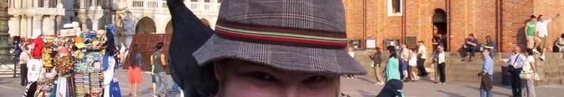

Ben Webster: Curriculum Vitae

Menu:
Main
Research
Publications
Talks
Teaching
Curriculum Vitae
Travel Schedule
Blog
The photo:
Me and a very friendly pigeon in Saint Mark's Square, Venice.
Links:
Me on the arXiv.
Me on Citebase.
Me on Google Calendar.
My CV is best viewed in
PDF
.